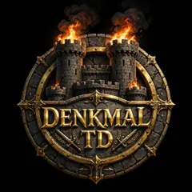

SPIELEN · MODUS II

Dein Denkmal.
Deine letzte Wacht.
DENKMAL-ANSTURM
Halte das Denkmal gegen Angriffswellen aus allen Richtungen. Es kämpft automatisch – du entscheidest über Ausbauten und Waffen.
EndlosBoss jede 5. WelleRekord 0
Alle Käufe gelten nur für diesen Durchlauf.
⌂ Hauptmenü